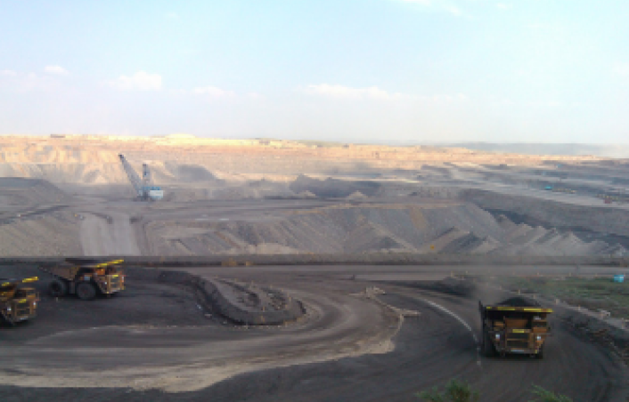

Brittle Failure Dynamics
Traditional monitoring methods struggle to capture the instantaneous nature of rockfall events in inaccessible terrains.
Zero-Warning Brittle Failure
Unlike gradual landslides, rock masses fail instantaneously with almost no visible deformation. The "Golden Warning Time" is microscopic, making it impossible to rely on traditional manual observation.
Inaccessible High-Risk Terrain
Vertical rock faces and unstable cliffs make manual inspection extremely dangerous. Most critical hazard zones remain "unreachable" for standard monitoring tools and cabling.
Erratic Environmental Catalysts
Freeze-thaw cycles and intense rainfall act as sudden catalysts for collapse. Without real-time correlation, differentiating between rock "breathing" and failure leads to false alarms.
From Sensor to Warning: The Data Flow
Medo's tailings solution creates an unbroken chain from field instrumentation to real-time decision support — five layers, zero gaps.

On-site Survey & Site Assessment
Our engineers conduct a thorough field inspection of the tailings dam facility, evaluating terrain, geotechnical conditions, structural integrity, and risk zones. Key survey outputs include a topographic map, hazard classification, sensor placement plan, and connectivity feasibility report — laying the foundation for a precisely tailored monitoring architecture.

Hardware & Integrated Monitoring Stations Development
Based on the survey results, we deploy a network of all-in-one integrated monitoring stations at critical locations across the site. Each station combines a high-precision GNSS receiver with a suite of environmental and structural sensors — measuring displacement, seepage, pore water pressure, rainfall, and more. Ruggedised enclosures ensure continuous operation in harsh outdoor conditions.

Data Transmission & GNSS Processing Platform
Raw sensor data is securely transmitted to the cloud-based MEDO computation platform, AMS, via satellite, 4G, or 5G links — whichever provides the most reliable coverage for the site. MEDO performs real-time GNSS baseline processing, multi-sensor fusion, and precision deformation calculation, converting raw signals into high-accuracy displacement vectors and trend indicators.

Intelligent Data Analytics and Remote Device Management
Acting as the core engine, the MDT Platform ensures high-precision collection and real-time acquisition of monitoring data. By integrating big data analytics and remote device management, the platform automates the entire process—from data retrieval and analysis to visual presentation—providing users with accurate, intuitive, and instantaneous equipment updates to fully understand the real-time status of the tailings storage facility.

Full-Cycle Lifecycle Management and Decision Support
Leveraging MD-NET and MD LINK, this step enables comprehensive project lifecycle management across large-scale displays and mobile devices. The system provides real-time intelligent warnings and instant status updates, empowering stakeholders to make rapid, informed decisions based on live project data.
Medo: Engineering Resilience for Brittle Rock Masses
Holistic Multi-Hazard Perception
Integrating surface displacement, deep-seated fracturing, and environmental triggers for a 360-degree view of complex rockfall risks.
Sub-Millimeter Precision Response
High-frequency sampling captures microscopic precursors in brittle fracturing, providing the definitive "Golden Warning Time" before instantaneous collapse.
Remote Autonomous Connectivity
Ultra-low power LoRaWAN/Satellite terminals enable rapid deployment on vertical, inaccessible rock faces—delivering real-time data without the need for cables or on-site power.
Integrated Full-Lifecycle Management
A seamless digital chain from rapid sensor deployment to cloud-based predictive analytics, ensuring long-term structural integrity and proactive risk mitigation.
Recommended Hardware
Each component is field-validated for tailings dam environments and integrates natively with the Medo cloud platform.


Proven in the Field

Shanxi Huge Open-Pit Mine
Slope Safety Project
A 380m deep open-pit coal mine in Shanxi Province faced recurring bench instability events that threatened personnel safety and heavy machinery.
Medo deployed 24 GNSS monitoring stations and 3 robotic total stations, providing millimetric displacement tracking 24/7.